Chapter 12 Estimación del modelo
El siguiente paso consiste en observar los valores estimados para cada relación de cointegración y determinar si todas ellas influyen en el comportamiento de corto plazo de cada una de las series en el análisis.
Johansen [1995] propone restringir \(\beta'\) de tal manera que la primera parte de la matriz sea una matriz identidad. Es decir, \(\beta'=[I_r : \beta'_1]\) donde \(\beta'_1\) tiene dimensión \(((k-r) \times r)\). Esto se obtiene al normalizar el espacio de cointegración de la siguiente manera:
\[\beta_c = \beta (S'\beta)^{-1}\]
donde \(S'= (I_r,0)\).
#traemos las series
ln_pib_cte <- series_db$log_GDP_constante
edu <- series_db$Gasto_Educacion_PorcGDP
salud <- series_db$Gasto_Salud_PorcGDP
rec_imp <- series_db$Recaudacion_Impositiva_PorcGDP
# generamos la matriz X
model.data <- cbind(ln_pib_cte,edu,salud,rec_imp)
# estimamos el rango de cointegracion de PI con ca.jo
M1 <- ca.jo(model.data,spec='transitory', type='eigen',K=2)12.1 Modelo 1: VECM con K=2 (lags), y r=1 (relaciones de cointegración)
Desde los objetos obtenidos por el ajuste del modelo, se puede obtener \(\beta_c\) de la siguiente manera
k_aux <- 4
rel_coint_aux <- 1
tmp_beta <- M1@V[,1:rel_coint_aux]
st <- cbind(diag(rel_coint_aux),matrix(0,rel_coint_aux,(k_aux-rel_coint_aux)))
beta_c <- tmp_beta%*%solve(st%*%tmp_beta)
beta_c## [,1]
## [1,] 1.0000000
## [2,] -0.2734779
## [3,] -0.3187240
## [4,] 0.2359534De tal manera que los vectores de cointegración tienen una interpretación mucho más sencilla.
Este resultado puede ser validado con lo que se obtiene a partir de la función cajorls
M1.jorls <- cajorls(M1, r = rel_coint_aux)
M1.jorls$beta## ect1
## ln_pib_cte.l1 1.0000000
## edu.l1 -0.2734779
## salud.l1 -0.3187240
## rec_imp.l1 0.2359534Ahora bien, Una vez que se han definido las relaciones de cointegración restringida veamos cómo es el ajuste del modelo a partir de estas definiciones:
summary(M1.jorls$rlm)## Response ln_pib_cte.d :
##
## Call:
## lm(formula = ln_pib_cte.d ~ ect1 + constant + ln_pib_cte.dl1 +
## edu.dl1 + salud.dl1 + rec_imp.dl1 - 1, data = data.mat)
##
## Residuals:
## Min 1Q Median 3Q Max
## -0.078343 -0.009848 0.003730 0.015520 0.040400
##
## Coefficients:
## Estimate Std. Error t value Pr(>|t|)
## ect1 0.025758 0.033287 0.774 0.449
## constant -0.751983 1.017088 -0.739 0.469
## ln_pib_cte.dl1 -0.248623 0.247119 -1.006 0.328
## edu.dl1 -0.030300 0.028502 -1.063 0.302
## salud.dl1 -0.060255 0.050947 -1.183 0.252
## rec_imp.dl1 -0.004260 0.008287 -0.514 0.613
##
## Residual standard error: 0.03313 on 18 degrees of freedom
## Multiple R-squared: 0.4807, Adjusted R-squared: 0.3077
## F-statistic: 2.777 on 6 and 18 DF, p-value: 0.04316
##
##
## Response edu.d :
##
## Call:
## lm(formula = edu.d ~ ect1 + constant + ln_pib_cte.dl1 + edu.dl1 +
## salud.dl1 + rec_imp.dl1 - 1, data = data.mat)
##
## Residuals:
## Min 1Q Median 3Q Max
## -0.34754 -0.12005 -0.01668 0.11324 0.35722
##
## Coefficients:
## Estimate Std. Error t value Pr(>|t|)
## ect1 0.81182 0.22350 3.632 0.00191 **
## constant -24.67609 6.82904 -3.613 0.00199 **
## ln_pib_cte.dl1 -2.43462 1.65923 -1.467 0.15954
## edu.dl1 -0.29248 0.19137 -1.528 0.14380
## salud.dl1 0.08351 0.34207 0.244 0.80990
## rec_imp.dl1 -0.15076 0.05564 -2.710 0.01436 *
## ---
## Signif. codes: 0 '***' 0.001 '**' 0.01 '*' 0.05 '.' 0.1 ' ' 1
##
## Residual standard error: 0.2225 on 18 degrees of freedom
## Multiple R-squared: 0.5246, Adjusted R-squared: 0.3662
## F-statistic: 3.311 on 6 and 18 DF, p-value: 0.02245
##
##
## Response salud.d :
##
## Call:
## lm(formula = salud.d ~ ect1 + constant + ln_pib_cte.dl1 + edu.dl1 +
## salud.dl1 + rec_imp.dl1 - 1, data = data.mat)
##
## Residuals:
## Min 1Q Median 3Q Max
## -0.32725 -0.08489 0.01468 0.08836 0.19771
##
## Coefficients:
## Estimate Std. Error t value Pr(>|t|)
## ect1 -0.10603 0.14013 -0.757 0.4591
## constant 3.22199 4.28164 0.753 0.4615
## ln_pib_cte.dl1 1.04846 1.04030 1.008 0.3269
## edu.dl1 0.20965 0.11998 1.747 0.0976 .
## salud.dl1 0.14725 0.21447 0.687 0.5011
## rec_imp.dl1 -0.03174 0.03489 -0.910 0.3750
## ---
## Signif. codes: 0 '***' 0.001 '**' 0.01 '*' 0.05 '.' 0.1 ' ' 1
##
## Residual standard error: 0.1395 on 18 degrees of freedom
## Multiple R-squared: 0.2986, Adjusted R-squared: 0.06485
## F-statistic: 1.277 on 6 and 18 DF, p-value: 0.3163
##
##
## Response rec_imp.d :
##
## Call:
## lm(formula = rec_imp.d ~ ect1 + constant + ln_pib_cte.dl1 + edu.dl1 +
## salud.dl1 + rec_imp.dl1 - 1, data = data.mat)
##
## Residuals:
## Min 1Q Median 3Q Max
## -1.43866 -0.70667 -0.03661 0.56896 1.42373
##
## Coefficients:
## Estimate Std. Error t value Pr(>|t|)
## ect1 -2.4251 0.9305 -2.606 0.0179 *
## constant 73.9915 28.4304 2.603 0.0180 *
## ln_pib_cte.dl1 14.0049 6.9076 2.027 0.0577 .
## edu.dl1 0.9886 0.7967 1.241 0.2306
## salud.dl1 -2.0040 1.4241 -1.407 0.1764
## rec_imp.dl1 0.3522 0.2316 1.520 0.1458
## ---
## Signif. codes: 0 '***' 0.001 '**' 0.01 '*' 0.05 '.' 0.1 ' ' 1
##
## Residual standard error: 0.9262 on 18 degrees of freedom
## Multiple R-squared: 0.3743, Adjusted R-squared: 0.1657
## F-statistic: 1.794 on 6 and 18 DF, p-value: 0.1569mysum <- summary(M1.jorls$rlm)
screenreg(list(mysum[[1]], mysum[[2]],mysum[[3]],mysum[[4]]))##
## =====================================================
## Model 1 Model 2 Model 3 Model 4
## -----------------------------------------------------
## ect1 0.03 0.81 ** -0.11 -2.43 *
## (0.03) (0.22) (0.14) (0.93)
## constant -0.75 -24.68 ** 3.22 73.99 *
## (1.02) (6.83) (4.28) (28.43)
## ln_pib_cte.dl1 -0.25 -2.43 1.05 14.00
## (0.25) (1.66) (1.04) (6.91)
## edu.dl1 -0.03 -0.29 0.21 0.99
## (0.03) (0.19) (0.12) (0.80)
## salud.dl1 -0.06 0.08 0.15 -2.00
## (0.05) (0.34) (0.21) (1.42)
## rec_imp.dl1 -0.00 -0.15 * -0.03 0.35
## (0.01) (0.06) (0.03) (0.23)
## -----------------------------------------------------
## R^2 0.48 0.52 0.30 0.37
## Adj. R^2 0.31 0.37 0.06 0.17
## Num. obs. 24 24 24 24
## RMSE 0.03 0.22 0.14 0.93
## =====================================================
## *** p < 0.001, ** p < 0.01, * p < 0.05Finalmente obsevemos nuestro modelo ajustado vs los datos recopilados:
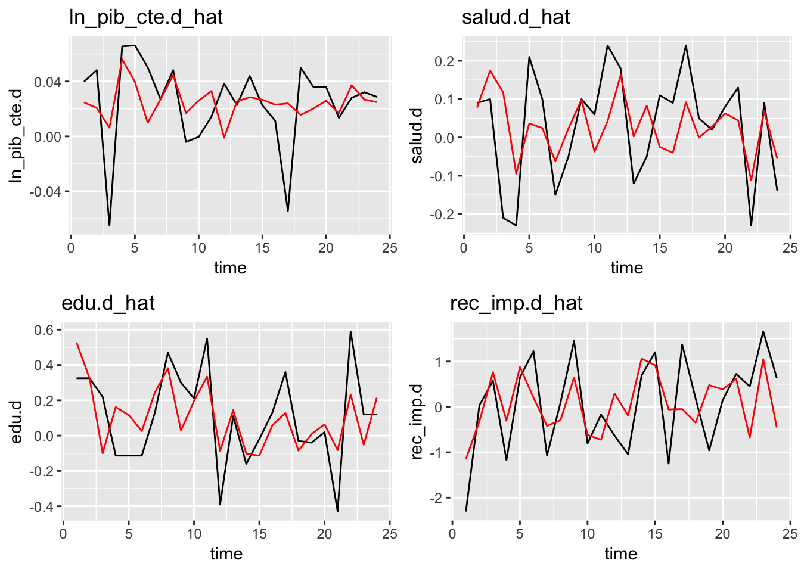
plot(irf(vec2var(M1,r=rel_coint_aux),n.ahead=3,response='edu',boot=TRUE))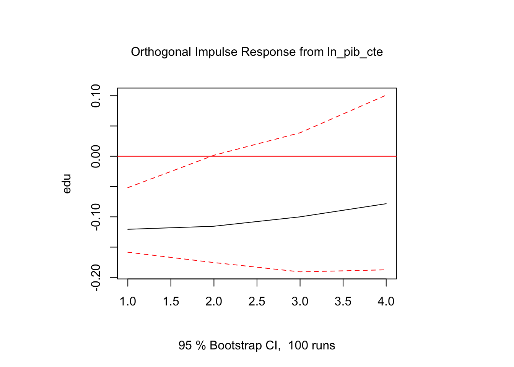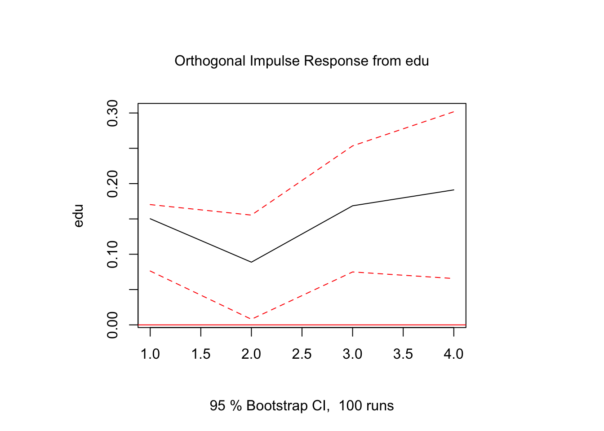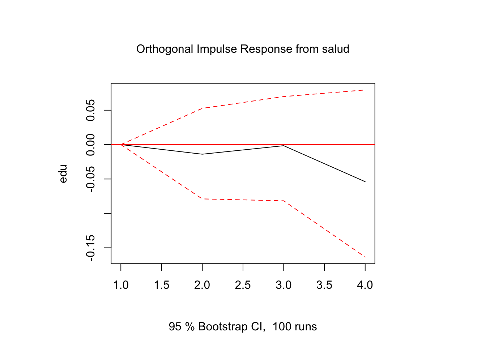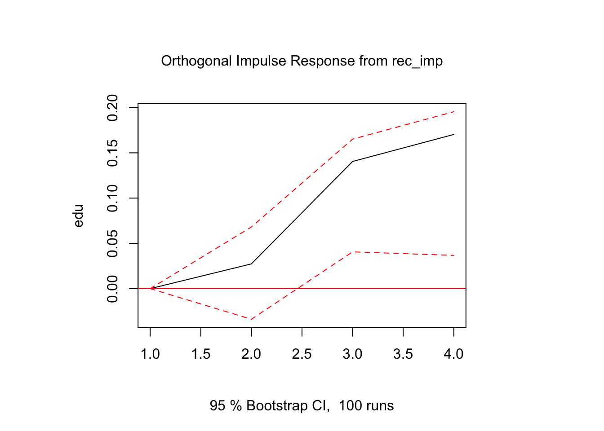
plot(irf(vec2var(M1,r=rel_coint_aux),n.ahead=3,response='rec_imp',boot=TRUE))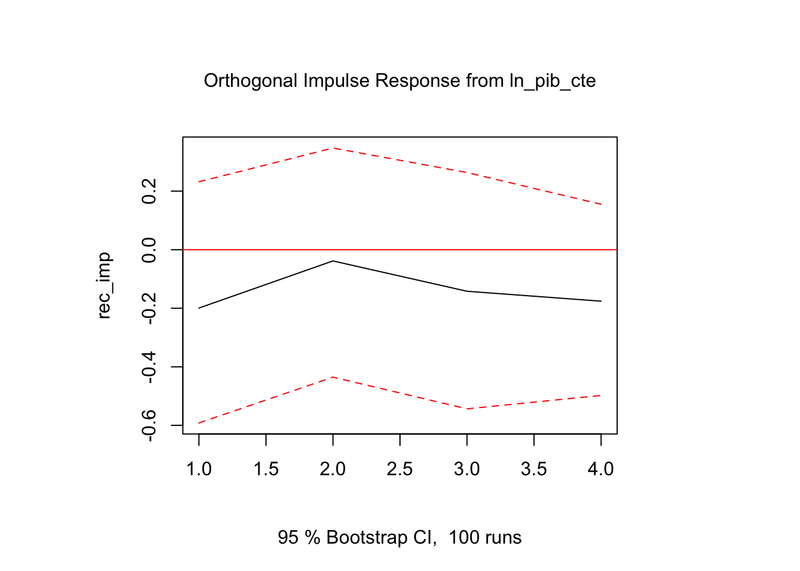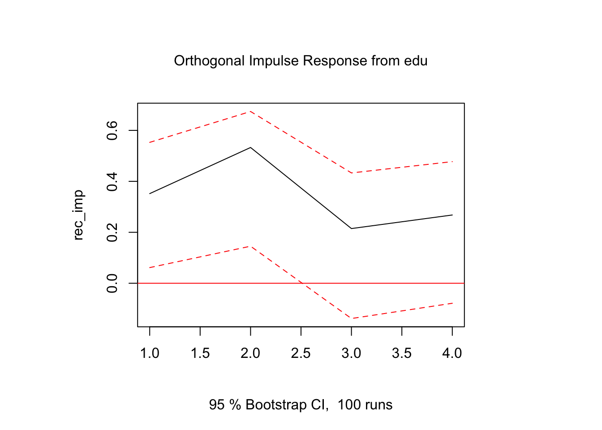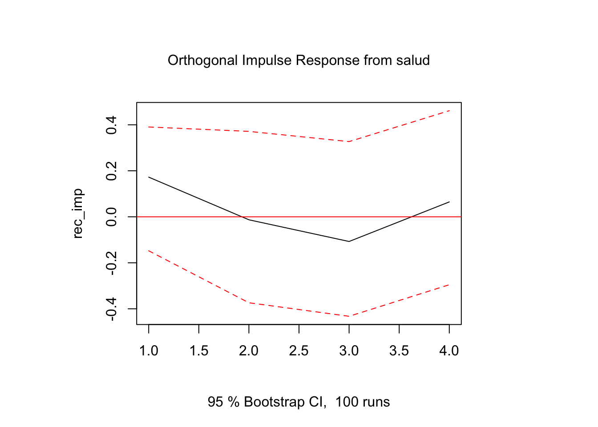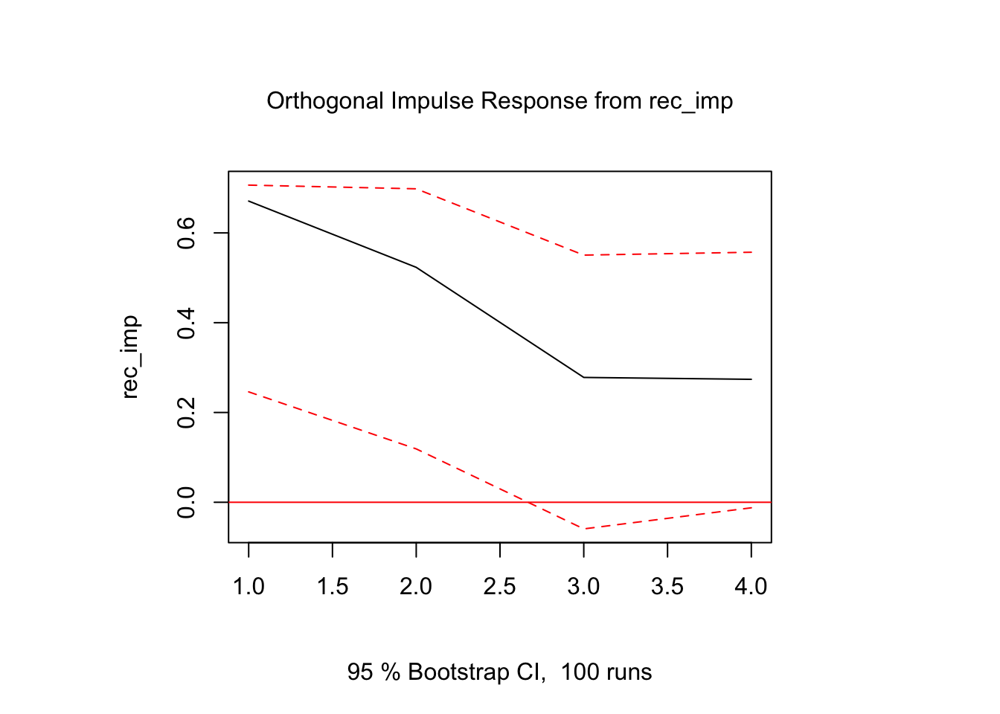
BIC(vec2var(M1,r=rel_coint_aux))## [1] 4.412841Interpretar la relación de cointegración como ceteris paribus de gastos vs ceteris paribus de income (pib y recauación).
Esta relación de cointegración podemos analizar con dos bandas de desviación estándar y despues ver en què punto la relación queda fuera de las bandas y ver los datos históricos para ver qué hicieron para que la relación de cointegración regresara al equilibrio
Tenemos que explicar que el PIB es un alma libre, porque realmente las series que podemos controlar son la recaudación y los gastos (salud y educaciòn). El producto interno bruto no puede ser impactado por las series de gasto en salud, educación ni recaudación impositiva, pero si al revés.
Explicar que la serie de salud no tiene ningún efecto ante la ruptura del equilibrio. Esto hace sentido porque rara vez se toma una medida política incrementando el gasto en salud para corregir el pib o la recaudación.. Hace sentido que no tenga efectos
En donde sí que tenemos que meterle a la interpretación es en el caso de la educación, pues el signo de alpha es positivo, esto quiere decir que si suponemos que existe un efecto positivo de la relación de equilibiro ( que el pib y la recaudación aumentan respecto al gasto) entonces veremos una corrección en el corto plazo de la educación de manera positiva, aunque la velocidad de ajuste es relativamente lenta. Por otro lado si la relación de cointegración se rompa negativamente, entonces veríamos una contracción de la eduación
La recaudación impositiva también tiene la relación de cointegración significativa en su ecuación. Esta tiene una alpha negativa, lo cual quiere decir que si el Pib crece bastante, veremos reflejado relativamente rápido una reducción en la recaudación impositiva. Por otro lado, si el gasto es el que provoca la salida del equilibrio de la relación de cointegración se verá casi inmediato un incremento en la recaudación impositiva para contrarrestar el efecto. Algo muy utilizado en el gobierno mexicano y en casi todos los gobiernos.
Debemos de ver esto representado en las funciones de impulso respuesta. Aunque debemos investigar si el efecto aleatorio es positivo.
El profesor propone documentar tambien el escenario 4, pues las relaciones de cointegración sobre educación son muy interesantes, en particular deberíamos entrar a detalle con la relación número dos de cointegración, pues es el efecto del gasto en educación en fucnión del gasto en salud y la recaudación. Es decir como se ve la recaudación vs el gasto del gobierno. Esto está muy interesante aunque deberíamos ser muy cuidadosos con la estimación del modelo pues se tienen demasiados paràmetros estiamdos y muy pocos datos. Esto nos podría generar un sobre ajuste.
Finalmente, el profe propone que pongamos una tablita con los AIC por ecuación del primer modelo vs el último modelo porque así podremos darnos cuenta del ajuste real de los datos. También sugiere sacar a mano el BIC pues no sabemos cómo toma los datos útiles la función de BIC sobre un moelo VAR.
12.2 Modelo 2: VECM con K=2 (lags), y r=2 (relaciones de cointegración)
#traemos las series
ln_pib_cte <- series_db$log_GDP_constante
edu <- series_db$Gasto_Educacion_PorcGDP
salud <- series_db$Gasto_Salud_PorcGDP
rec_imp <- series_db$Recaudacion_Impositiva_PorcGDP
# generamos la matriz X
model.data <- cbind(ln_pib_cte,edu,salud,rec_imp)
# estimamos el rango de cointegracion de PI con ca.jo
M1 <- ca.jo(model.data,spec='transitory', type='eigen',K=2)Desde los objetos obtenidos por el ajuste del modelo, se puede obtener \(\beta_c\) de la siguiente manera
k_aux <- 4
rel_coint_aux <- 2
tmp_beta <- M1@V[,1:rel_coint_aux]
st <- cbind(diag(rel_coint_aux),matrix(0,rel_coint_aux,(k_aux-rel_coint_aux)))
beta_c <- tmp_beta%*%solve(st%*%tmp_beta)
beta_c## [,1] [,2]
## ln_pib_cte.l1 1.000000e+00 0.000000
## edu.l1 -2.775558e-17 1.000000
## salud.l1 6.381212e-03 1.188781
## rec_imp.l1 -2.435841e-01 -1.753478De tal manera que los vectores de cointegración tienen una interpretación mucho más sencilla.
Este resultado puede ser validado con lo que se obtiene a partir de la función cajorls
M1.jorls <- cajorls(M1, r = rel_coint_aux)
M1.jorls$beta## ect1 ect2
## ln_pib_cte.l1 1.000000e+00 0.000000
## edu.l1 -2.775558e-17 1.000000
## salud.l1 6.381212e-03 1.188781
## rec_imp.l1 -2.435841e-01 -1.753478Ahora bien, Una vez que se han definido las relaciones de cointegración restringida veamos cómo es el ajuste del modelo a partir de estas definiciones:
summary(M1.jorls$rlm)## Response ln_pib_cte.d :
##
## Call:
## lm(formula = ln_pib_cte.d ~ ect1 + ect2 + constant + ln_pib_cte.dl1 +
## edu.dl1 + salud.dl1 + rec_imp.dl1 - 1, data = data.mat)
##
## Residuals:
## Min 1Q Median 3Q Max
## -0.086214 -0.005774 0.000822 0.013168 0.037405
##
## Coefficients:
## Estimate Std. Error t value Pr(>|t|)
## ect1 -0.168780 0.118160 -1.428 0.171
## ect2 0.017706 0.016872 1.049 0.309
## constant 4.902612 3.447436 1.422 0.173
## ln_pib_cte.dl1 -0.084688 0.253742 -0.334 0.743
## edu.dl1 -0.043199 0.028125 -1.536 0.143
## salud.dl1 -0.085585 0.050647 -1.690 0.109
## rec_imp.dl1 -0.001347 0.008060 -0.167 0.869
##
## Residual standard error: 0.0315 on 17 degrees of freedom
## Multiple R-squared: 0.5569, Adjusted R-squared: 0.3744
## F-statistic: 3.052 on 7 and 17 DF, p-value: 0.02846
##
##
## Response edu.d :
##
## Call:
## lm(formula = edu.d ~ ect1 + ect2 + constant + ln_pib_cte.dl1 +
## edu.dl1 + salud.dl1 + rec_imp.dl1 - 1, data = data.mat)
##
## Residuals:
## Min 1Q Median 3Q Max
## -0.38058 -0.07983 -0.03273 0.06450 0.45910
##
## Coefficients:
## Estimate Std. Error t value Pr(>|t|)
## ect1 2.63336 0.72614 3.626 0.002085 **
## ect2 -0.45376 0.10368 -4.376 0.000412 ***
## constant -77.62209 21.18595 -3.664 0.001923 **
## ln_pib_cte.dl1 -3.96960 1.55935 -2.546 0.020895 *
## edu.dl1 -0.17170 0.17284 -0.993 0.334450
## salud.dl1 0.32067 0.31125 1.030 0.317311
## rec_imp.dl1 -0.17804 0.04953 -3.594 0.002235 **
## ---
## Signif. codes: 0 '***' 0.001 '**' 0.01 '*' 0.05 '.' 0.1 ' ' 1
##
## Residual standard error: 0.1936 on 17 degrees of freedom
## Multiple R-squared: 0.6601, Adjusted R-squared: 0.5202
## F-statistic: 4.717 on 7 and 17 DF, p-value: 0.004238
##
##
## Response salud.d :
##
## Call:
## lm(formula = salud.d ~ ect1 + ect2 + constant + ln_pib_cte.dl1 +
## edu.dl1 + salud.dl1 + rec_imp.dl1 - 1, data = data.mat)
##
## Residuals:
## Min 1Q Median 3Q Max
## -0.27149 -0.07816 0.02743 0.07264 0.23336
##
## Coefficients:
## Estimate Std. Error t value Pr(>|t|)
## ect1 0.62584 0.50595 1.237 0.2329
## ect2 -0.06411 0.07224 -0.887 0.3872
## constant -18.05083 14.76156 -1.223 0.2381
## ln_pib_cte.dl1 0.43173 1.08650 0.397 0.6960
## edu.dl1 0.25818 0.12043 2.144 0.0468 *
## salud.dl1 0.24254 0.21687 1.118 0.2790
## rec_imp.dl1 -0.04270 0.03451 -1.237 0.2328
## ---
## Signif. codes: 0 '***' 0.001 '**' 0.01 '*' 0.05 '.' 0.1 ' ' 1
##
## Residual standard error: 0.1349 on 17 degrees of freedom
## Multiple R-squared: 0.3807, Adjusted R-squared: 0.1258
## F-statistic: 1.493 on 7 and 17 DF, p-value: 0.2351
##
##
## Response rec_imp.d :
##
## Call:
## lm(formula = rec_imp.d ~ ect1 + ect2 + constant + ln_pib_cte.dl1 +
## edu.dl1 + salud.dl1 + rec_imp.dl1 - 1, data = data.mat)
##
## Residuals:
## Min 1Q Median 3Q Max
## -1.61135 -0.53487 0.05402 0.45646 1.19171
##
## Coefficients:
## Estimate Std. Error t value Pr(>|t|)
## ect1 5.7533 2.9231 1.968 0.0656 .
## ect2 -0.3773 0.4174 -0.904 0.3787
## constant -163.7280 85.2841 -1.920 0.0718 .
## ln_pib_cte.dl1 7.1131 6.2772 1.133 0.2729
## edu.dl1 1.5308 0.6958 2.200 0.0419 *
## salud.dl1 -0.9392 1.2529 -0.750 0.4637
## rec_imp.dl1 0.2297 0.1994 1.152 0.2652
## ---
## Signif. codes: 0 '***' 0.001 '**' 0.01 '*' 0.05 '.' 0.1 ' ' 1
##
## Residual standard error: 0.7792 on 17 degrees of freedom
## Multiple R-squared: 0.5817, Adjusted R-squared: 0.4095
## F-statistic: 3.378 on 7 and 17 DF, p-value: 0.01903mysum <- summary(M1.jorls$rlm)
screenreg(list(mysum[[1]], mysum[[2]],mysum[[3]],mysum[[4]]))##
## ========================================================
## Model 1 Model 2 Model 3 Model 4
## --------------------------------------------------------
## ect1 -0.17 2.63 ** 0.63 5.75
## (0.12) (0.73) (0.51) (2.92)
## ect2 0.02 -0.45 *** -0.06 -0.38
## (0.02) (0.10) (0.07) (0.42)
## constant 4.90 -77.62 ** -18.05 -163.73
## (3.45) (21.19) (14.76) (85.28)
## ln_pib_cte.dl1 -0.08 -3.97 * 0.43 7.11
## (0.25) (1.56) (1.09) (6.28)
## edu.dl1 -0.04 -0.17 0.26 * 1.53 *
## (0.03) (0.17) (0.12) (0.70)
## salud.dl1 -0.09 0.32 0.24 -0.94
## (0.05) (0.31) (0.22) (1.25)
## rec_imp.dl1 -0.00 -0.18 ** -0.04 0.23
## (0.01) (0.05) (0.03) (0.20)
## --------------------------------------------------------
## R^2 0.56 0.66 0.38 0.58
## Adj. R^2 0.37 0.52 0.13 0.41
## Num. obs. 24 24 24 24
## RMSE 0.03 0.19 0.13 0.78
## ========================================================
## *** p < 0.001, ** p < 0.01, * p < 0.05Finalmente obsevemos nuestro modelo ajustado vs los datos recopilados:

vecm.level <- vec2var(M1,r=rel_coint_aux)
arch.test(vecm.level)##
## ARCH (multivariate)
##
## data: Residuals of VAR object vecm.level
## Chi-squared = 190, df = 500, p-value = 1normality.test(vecm.level)## $JB
##
## JB-Test (multivariate)
##
## data: Residuals of VAR object vecm.level
## Chi-squared = 20.104, df = 8, p-value = 0.009948
##
##
## $Skewness
##
## Skewness only (multivariate)
##
## data: Residuals of VAR object vecm.level
## Chi-squared = 10.138, df = 4, p-value = 0.03816
##
##
## $Kurtosis
##
## Kurtosis only (multivariate)
##
## data: Residuals of VAR object vecm.level
## Chi-squared = 9.966, df = 4, p-value = 0.04101serial.test(vecm.level)##
## Portmanteau Test (asymptotic)
##
## data: Residuals of VAR object vecm.level
## Chi-squared = 174.4, df = 228, p-value = 0.9966predict(vecm.level)## $ln_pib_cte
## fcst lower upper CI
## [1,] 30.55934 30.50739 30.61130 0.05195443
## [2,] 30.57767 30.51072 30.64462 0.06694729
## [3,] 30.59004 30.51119 30.66889 0.07885251
## [4,] 30.61790 30.53273 30.70308 0.08517283
## [5,] 30.64494 30.55536 30.73452 0.08958148
## [6,] 30.67394 30.57885 30.76903 0.09509408
## [7,] 30.70390 30.60335 30.80444 0.10054392
## [8,] 30.72937 30.62278 30.83596 0.10658961
## [9,] 30.75334 30.64022 30.86646 0.11311650
## [10,] 30.77627 30.65702 30.89552 0.11925199
##
## $edu
## fcst lower upper CI
## [1,] 6.077113 5.757831 6.396395 0.3192819
## [2,] 6.532336 6.162907 6.901765 0.3694286
## [3,] 6.795815 6.332980 7.258650 0.4628350
## [4,] 7.014157 6.395996 7.632317 0.6181605
## [5,] 7.072200 6.291781 7.852618 0.7804186
## [6,] 7.082083 6.147802 8.016364 0.9342809
## [7,] 7.134247 6.091060 8.177434 1.0431870
## [8,] 7.212057 6.094409 8.329704 1.1176475
## [9,] 7.344362 6.170599 8.518125 1.1737630
## [10,] 7.514848 6.295759 8.733938 1.2190897
##
## $salud
## fcst lower upper CI
## [1,] 2.776238 2.553774 2.998701 0.2224634
## [2,] 2.920687 2.564271 3.277103 0.3564157
## [3,] 3.008082 2.542615 3.473549 0.4654673
## [4,] 3.050788 2.507351 3.594225 0.5434369
## [5,] 3.110439 2.508689 3.712189 0.6017496
## [6,] 3.122135 2.469348 3.774922 0.6527868
## [7,] 3.129627 2.431256 3.827998 0.6983710
## [8,] 3.149231 2.408864 3.889597 0.7403664
## [9,] 3.166564 2.384987 3.948141 0.7815772
## [10,] 3.196444 2.374667 4.018221 0.8217770
##
## $rec_imp
## fcst lower upper CI
## [1,] 12.73788 11.45261 14.02315 1.285271
## [2,] 12.97129 11.37561 14.56698 1.595683
## [3,] 12.64827 10.92842 14.36812 1.719846
## [4,] 12.08990 10.21225 13.96755 1.877649
## [5,] 12.03398 10.11163 13.95633 1.922351
## [6,] 11.97677 10.05006 13.90349 1.926714
## [7,] 12.10515 10.17624 14.03406 1.928910
## [8,] 12.40626 10.47264 14.33988 1.933624
## [9,] 12.62933 10.69245 14.56621 1.936876
## [10,] 12.82522 10.88297 14.76748 1.942256irf(vecm.level,boot=FALSE)##
## Impulse response coefficients
## $ln_pib_cte
## ln_pib_cte edu salud rec_imp
## [1,] 0.02650785 -0.087870552 0.03119667 -0.024312688
## [2,] 0.01977019 -0.074052969 0.04950254 0.185641495
## [3,] 0.01610376 0.007232141 0.05175272 0.173857822
## [4,] 0.01291972 0.049538716 0.07112342 0.207373014
## [5,] 0.01186309 0.061511538 0.07541191 0.111921878
## [6,] 0.01291634 0.063195901 0.07671714 0.027963439
## [7,] 0.01350821 0.043648508 0.07887976 0.015708690
## [8,] 0.01436027 0.024495389 0.07446609 0.002292907
## [9,] 0.01503154 0.013512040 0.07133805 0.021112885
## [10,] 0.01503096 0.007805182 0.06977369 0.052721406
## [11,] 0.01489427 0.010363860 0.06832830 0.068505909
##
## $edu
## ln_pib_cte edu salud rec_imp
## [1,] 0.0000000000 0.13717073 -0.03155182 0.1986786261
## [2,] 0.0003055544 0.05301416 -0.02674002 0.2981871446
## [3,] 0.0067239401 0.08678498 -0.06462684 -0.0379783453
## [4,] 0.0071454399 0.10945428 -0.04314167 0.0783861847
## [5,] 0.0047943376 0.09384652 -0.03943127 0.0822260391
## [6,] 0.0062375797 0.10969458 -0.04719915 -0.0134149215
## [7,] 0.0060360972 0.10503034 -0.03946851 0.0302987376
## [8,] 0.0058917722 0.09486340 -0.04206944 0.0134442591
## [9,] 0.0065688497 0.09587811 -0.04456224 0.0009084525
## [10,] 0.0064059752 0.09167027 -0.04293135 0.0260372065
## [11,] 0.0063747058 0.09081330 -0.04457499 0.0233630402
##
## $salud
## ln_pib_cte edu salud rec_imp
## [1,] 0.0000000000 0.00000000 0.10447185 0.029500992
## [2,] -0.0065975448 -0.02179995 0.11982458 -0.126689736
## [3,] -0.0043553753 -0.04877702 0.11542497 -0.242635645
## [4,] -0.0031129077 -0.12088983 0.11508697 -0.165159098
## [5,] -0.0011573818 -0.16630051 0.09771601 -0.146097067
## [6,] -0.0001684599 -0.17641559 0.09053670 -0.057074147
## [7,] -0.0011821703 -0.17326702 0.08976055 0.032203159
## [8,] -0.0020376260 -0.15236310 0.08873314 0.048831693
## [9,] -0.0028928177 -0.13091912 0.09293202 0.052625197
## [10,] -0.0035553118 -0.11919965 0.09672086 0.031843772
## [11,] -0.0035600483 -0.11457887 0.09842410 -0.002132192
##
## $rec_imp
## ln_pib_cte edu salud rec_imp
## [1,] 0.000000000 0.00000000 0.00000000 0.623770656
## [2,] 0.005438855 -0.01486241 -0.05159602 0.305564320
## [3,] 0.011328809 0.10135897 -0.05615848 0.128930383
## [4,] 0.006496407 0.12107961 -0.01768759 0.267124292
## [5,] 0.005958048 0.13721303 -0.02436241 0.059898784
## [6,] 0.007697202 0.14673085 -0.01890699 -0.012342925
## [7,] 0.007566109 0.11447091 -0.01402216 -0.001278395
## [8,] 0.008994716 0.09524006 -0.02323532 -0.046579823
## [9,] 0.009789247 0.08341227 -0.02481857 -0.007763804
## [10,] 0.009566978 0.07457358 -0.02668871 0.031000116
## [11,] 0.009560181 0.07955572 -0.02928219 0.041511038#fevd(vecm.level)plot(irf(vecm.level,n.ahead=3,response='edu',boot=TRUE))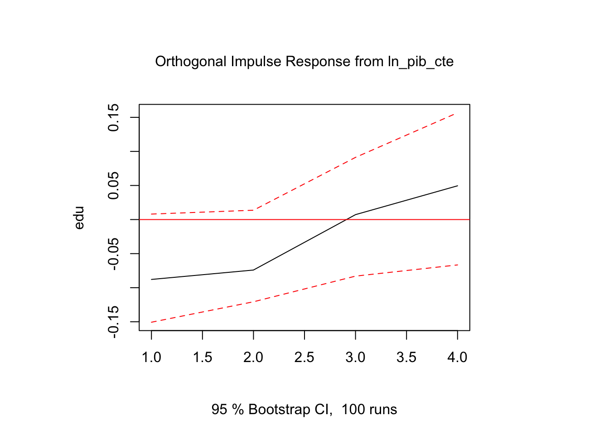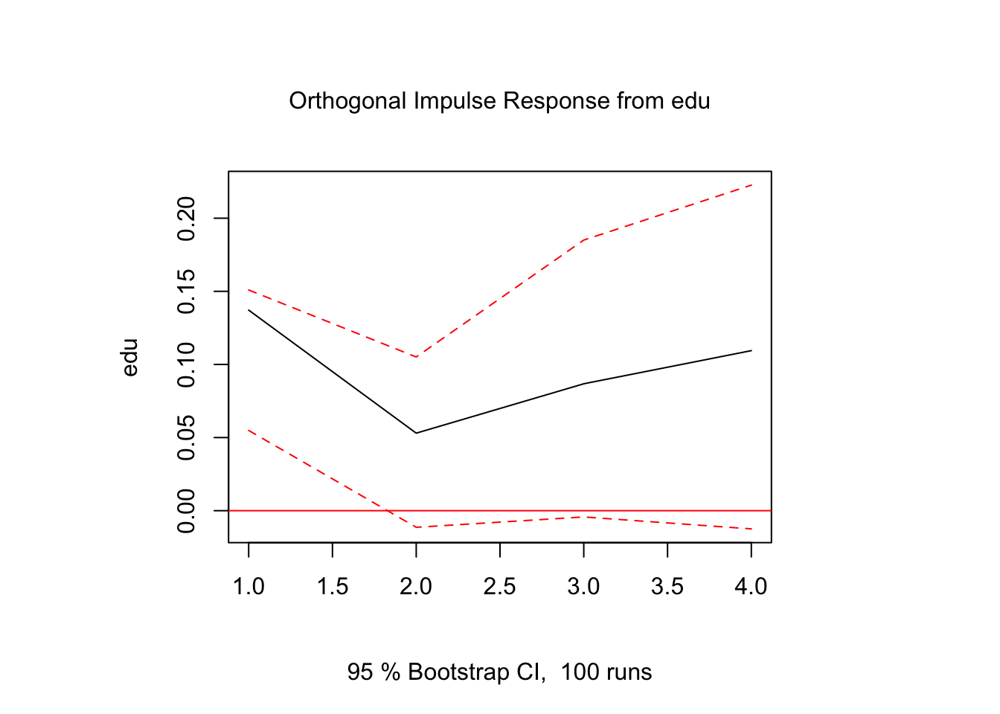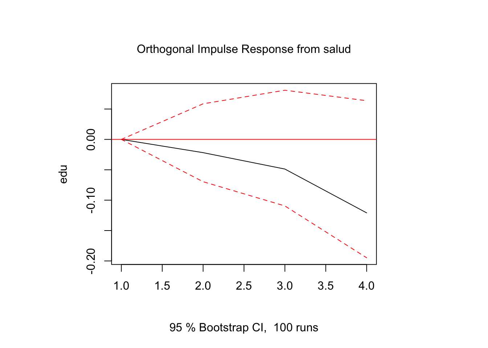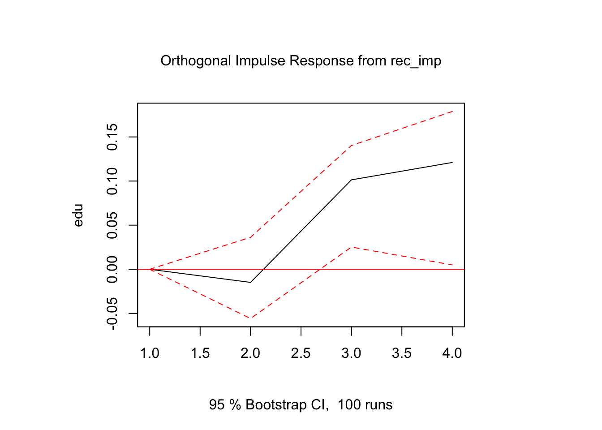
BIC(vec2var(M1,r=rel_coint_aux))## [1] -13.8412312.3 Modelo 3: VECM con K=3 (lags), y r=1 (relaciones de cointegración)
#traemos las series
ln_pib_cte <- series_db$log_GDP_constante
edu <- series_db$Gasto_Educacion_PorcGDP
salud <- series_db$Gasto_Salud_PorcGDP
rec_imp <- series_db$Recaudacion_Impositiva_PorcGDP
# generamos la matriz X
model.data <- cbind(ln_pib_cte,edu,salud,rec_imp)
# estimamos el rango de cointegracion de PI con ca.jo
M1 <- ca.jo(model.data,spec='transitory', type='eigen',K=3)Desde los objetos obtenidos por el ajuste del modelo, se puede obtener \(\beta_c\) de la siguiente manera
k_aux <- 4
rel_coint_aux <- 1
tmp_beta <- M1@V[,1:rel_coint_aux]
st <- cbind(diag(rel_coint_aux),matrix(0,rel_coint_aux,(k_aux-rel_coint_aux)))
beta_c <- tmp_beta%*%solve(st%*%tmp_beta)
beta_c## [,1]
## [1,] 1.0000000
## [2,] -0.2551987
## [3,] -0.2733728
## [4,] 0.2757764De tal manera que los vectores de cointegración tienen una interpretación mucho más sencilla.
Este resultado puede ser validado con lo que se obtiene a partir de la función cajorls
M1.jorls <- cajorls(M1, r = rel_coint_aux)
M1.jorls$beta## ect1
## ln_pib_cte.l1 1.0000000
## edu.l1 -0.2551987
## salud.l1 -0.2733728
## rec_imp.l1 0.2757764Ahora bien, Una vez que se han definido las relaciones de cointegración restringida veamos cómo es el ajuste del modelo a partir de estas definiciones:
summary(M1.jorls$rlm)## Response ln_pib_cte.d :
##
## Call:
## lm(formula = ln_pib_cte.d ~ ect1 + constant + ln_pib_cte.dl1 +
## edu.dl1 + salud.dl1 + rec_imp.dl1 + ln_pib_cte.dl2 + edu.dl2 +
## salud.dl2 + rec_imp.dl2 - 1, data = data.mat)
##
## Residuals:
## Min 1Q Median 3Q Max
## -0.064620 -0.008924 0.005533 0.017995 0.037844
##
## Coefficients:
## Estimate Std. Error t value Pr(>|t|)
## ect1 0.11332 0.08801 1.288 0.220
## constant -3.46748 2.72848 -1.271 0.226
## ln_pib_cte.dl1 -0.64815 0.38279 -1.693 0.114
## edu.dl1 -0.07366 0.04420 -1.667 0.120
## salud.dl1 -0.04525 0.06392 -0.708 0.491
## rec_imp.dl1 -0.02058 0.01685 -1.221 0.244
## ln_pib_cte.dl2 -0.55179 0.39058 -1.413 0.181
## edu.dl2 -0.05473 0.04474 -1.223 0.243
## salud.dl2 -0.02391 0.06393 -0.374 0.714
## rec_imp.dl2 -0.01915 0.01732 -1.105 0.289
##
## Residual standard error: 0.03544 on 13 degrees of freedom
## Multiple R-squared: 0.5524, Adjusted R-squared: 0.208
## F-statistic: 1.604 on 10 and 13 DF, p-value: 0.2096
##
##
## Response edu.d :
##
## Call:
## lm(formula = edu.d ~ ect1 + constant + ln_pib_cte.dl1 + edu.dl1 +
## salud.dl1 + rec_imp.dl1 + ln_pib_cte.dl2 + edu.dl2 + salud.dl2 +
## rec_imp.dl2 - 1, data = data.mat)
##
## Residuals:
## Min 1Q Median 3Q Max
## -0.39058 -0.11580 -0.00759 0.14918 0.32439
##
## Coefficients:
## Estimate Std. Error t value Pr(>|t|)
## ect1 1.31537 0.61076 2.154 0.0506 .
## constant -40.80566 18.93476 -2.155 0.0505 .
## ln_pib_cte.dl1 -3.35748 2.65644 -1.264 0.2285
## edu.dl1 -0.41775 0.30674 -1.362 0.1964
## salud.dl1 0.09742 0.44356 0.220 0.8296
## rec_imp.dl1 -0.26018 0.11695 -2.225 0.0444 *
## ln_pib_cte.dl2 -0.78458 2.71053 -0.289 0.7768
## edu.dl2 -0.22663 0.31051 -0.730 0.4784
## salud.dl2 0.17681 0.44364 0.399 0.6967
## rec_imp.dl2 -0.08504 0.12022 -0.707 0.4918
## ---
## Signif. codes: 0 '***' 0.001 '**' 0.01 '*' 0.05 '.' 0.1 ' ' 1
##
## Residual standard error: 0.2459 on 13 degrees of freedom
## Multiple R-squared: 0.5554, Adjusted R-squared: 0.2134
## F-statistic: 1.624 on 10 and 13 DF, p-value: 0.2038
##
##
## Response salud.d :
##
## Call:
## lm(formula = salud.d ~ ect1 + constant + ln_pib_cte.dl1 + edu.dl1 +
## salud.dl1 + rec_imp.dl1 + ln_pib_cte.dl2 + edu.dl2 + salud.dl2 +
## rec_imp.dl2 - 1, data = data.mat)
##
## Residuals:
## Min 1Q Median 3Q Max
## -0.125937 -0.044893 -0.007654 0.043395 0.129886
##
## Coefficients:
## Estimate Std. Error t value Pr(>|t|)
## ect1 -0.424615 0.223279 -1.902 0.07960 .
## constant 13.269233 6.922098 1.917 0.07749 .
## ln_pib_cte.dl1 0.783238 0.971131 0.807 0.43445
## edu.dl1 0.333203 0.112135 2.971 0.01082 *
## salud.dl1 0.531420 0.162156 3.277 0.00601 **
## rec_imp.dl1 -0.001809 0.042755 -0.042 0.96690
## ln_pib_cte.dl2 -0.604075 0.990906 -0.610 0.55262
## edu.dl2 -0.094375 0.113516 -0.831 0.42077
## salud.dl2 -0.663533 0.162183 -4.091 0.00127 **
## rec_imp.dl2 0.114249 0.043951 2.599 0.02203 *
## ---
## Signif. codes: 0 '***' 0.001 '**' 0.01 '*' 0.05 '.' 0.1 ' ' 1
##
## Residual standard error: 0.0899 on 13 degrees of freedom
## Multiple R-squared: 0.7861, Adjusted R-squared: 0.6215
## F-statistic: 4.777 on 10 and 13 DF, p-value: 0.005201
##
##
## Response rec_imp.d :
##
## Call:
## lm(formula = rec_imp.d ~ ect1 + constant + ln_pib_cte.dl1 + edu.dl1 +
## salud.dl1 + rec_imp.dl1 + ln_pib_cte.dl2 + edu.dl2 + salud.dl2 +
## rec_imp.dl2 - 1, data = data.mat)
##
## Residuals:
## Min 1Q Median 3Q Max
## -1.36265 -0.29583 0.02853 0.20818 1.50462
##
## Coefficients:
## Estimate Std. Error t value Pr(>|t|)
## ect1 1.41481 1.98995 0.711 0.4897
## constant -43.43218 61.69260 -0.704 0.4938
## ln_pib_cte.dl1 -1.01710 8.65512 -0.118 0.9082
## edu.dl1 -0.04207 0.99940 -0.042 0.9671
## salud.dl1 -0.43089 1.44520 -0.298 0.7703
## rec_imp.dl1 -0.43743 0.38105 -1.148 0.2717
## ln_pib_cte.dl2 -7.83374 8.83136 -0.887 0.3912
## edu.dl2 -1.93246 1.01171 -1.910 0.0784 .
## salud.dl2 -2.66402 1.44544 -1.843 0.0882 .
## rec_imp.dl2 -0.48020 0.39171 -1.226 0.2420
## ---
## Signif. codes: 0 '***' 0.001 '**' 0.01 '*' 0.05 '.' 0.1 ' ' 1
##
## Residual standard error: 0.8013 on 13 degrees of freedom
## Multiple R-squared: 0.5689, Adjusted R-squared: 0.2374
## F-statistic: 1.716 on 10 and 13 DF, p-value: 0.179mysum <- summary(M1.jorls$rlm)
screenreg(list(mysum[[1]], mysum[[2]],mysum[[3]],mysum[[4]]))##
## ====================================================
## Model 1 Model 2 Model 3 Model 4
## ----------------------------------------------------
## ect1 0.11 1.32 -0.42 1.41
## (0.09) (0.61) (0.22) (1.99)
## constant -3.47 -40.81 13.27 -43.43
## (2.73) (18.93) (6.92) (61.69)
## ln_pib_cte.dl1 -0.65 -3.36 0.78 -1.02
## (0.38) (2.66) (0.97) (8.66)
## edu.dl1 -0.07 -0.42 0.33 * -0.04
## (0.04) (0.31) (0.11) (1.00)
## salud.dl1 -0.05 0.10 0.53 ** -0.43
## (0.06) (0.44) (0.16) (1.45)
## rec_imp.dl1 -0.02 -0.26 * -0.00 -0.44
## (0.02) (0.12) (0.04) (0.38)
## ln_pib_cte.dl2 -0.55 -0.78 -0.60 -7.83
## (0.39) (2.71) (0.99) (8.83)
## edu.dl2 -0.05 -0.23 -0.09 -1.93
## (0.04) (0.31) (0.11) (1.01)
## salud.dl2 -0.02 0.18 -0.66 ** -2.66
## (0.06) (0.44) (0.16) (1.45)
## rec_imp.dl2 -0.02 -0.09 0.11 * -0.48
## (0.02) (0.12) (0.04) (0.39)
## ----------------------------------------------------
## R^2 0.55 0.56 0.79 0.57
## Adj. R^2 0.21 0.21 0.62 0.24
## Num. obs. 23 23 23 23
## RMSE 0.04 0.25 0.09 0.80
## ====================================================
## *** p < 0.001, ** p < 0.01, * p < 0.05Finalmente obsevemos nuestro modelo ajustado vs los datos recopilados:
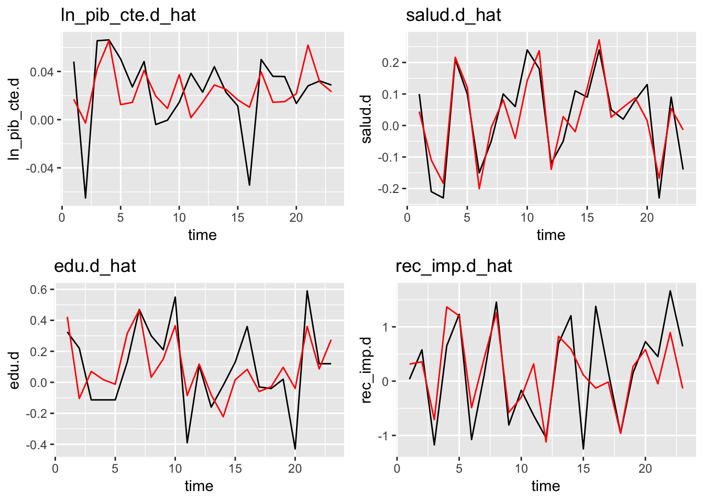
vecm.level <- vec2var(M1,r=rel_coint_aux)
arch.test(vecm.level)##
## ARCH (multivariate)
##
## data: Residuals of VAR object vecm.level
## Chi-squared = 180, df = 500, p-value = 1normality.test(vecm.level)## $JB
##
## JB-Test (multivariate)
##
## data: Residuals of VAR object vecm.level
## Chi-squared = 29.45, df = 8, p-value = 0.0002643
##
##
## $Skewness
##
## Skewness only (multivariate)
##
## data: Residuals of VAR object vecm.level
## Chi-squared = 15.118, df = 4, p-value = 0.004463
##
##
## $Kurtosis
##
## Kurtosis only (multivariate)
##
## data: Residuals of VAR object vecm.level
## Chi-squared = 14.333, df = 4, p-value = 0.006306serial.test(vecm.level)##
## Portmanteau Test (asymptotic)
##
## data: Residuals of VAR object vecm.level
## Chi-squared = 156.46, df = 212, p-value = 0.9984predict(vecm.level)## $ln_pib_cte
## fcst lower upper CI
## [1,] 30.58335 30.53114 30.63557 0.05221794
## [2,] 30.61140 30.53703 30.68577 0.07436864
## [3,] 30.63445 30.54432 30.72458 0.09013325
## [4,] 30.68663 30.57995 30.79330 0.10667838
## [5,] 30.71560 30.58991 30.84130 0.12569521
## [6,] 30.74623 30.60488 30.88758 0.14134924
## [7,] 30.79402 30.63881 30.94924 0.15521395
## [8,] 30.82699 30.65668 30.99730 0.17030986
## [9,] 30.86241 30.67755 31.04727 0.18486294
## [10,] 30.90642 30.70694 31.10590 0.19948138
##
## $edu
## fcst lower upper CI
## [1,] 6.437152 6.074777 6.799528 0.3623757
## [2,] 6.960571 6.509653 7.411489 0.4509185
## [3,] 7.666197 7.069040 8.263354 0.5971568
## [4,] 8.576224 7.778922 9.373526 0.7973023
## [5,] 9.192893 8.105446 10.280339 1.0874467
## [6,] 9.936738 8.481743 11.391733 1.4549949
## [7,] 10.747608 8.893253 12.601962 1.8543543
## [8,] 11.386826 9.098617 13.675035 2.2882091
## [9,] 12.164780 9.418884 14.910675 2.7458956
## [10,] 12.980324 9.749561 16.211086 3.2307623
##
## $salud
## fcst lower upper CI
## [1,] 2.600278 2.4678017 2.732754 0.1324760
## [2,] 2.613927 2.3189618 2.908892 0.2949651
## [3,] 2.426350 2.0241454 2.828555 0.4022047
## [4,] 2.263039 1.7509631 2.775115 0.5120761
## [5,] 2.188472 1.5614863 2.815458 0.6269858
## [6,] 1.962251 1.2142373 2.710264 0.7480133
## [7,] 1.803997 0.9093393 2.698654 0.8946573
## [8,] 1.695141 0.6400899 2.750193 1.0550516
## [9,] 1.487589 0.2688420 2.706337 1.2187474
## [10,] 1.335938 -0.0585061 2.730382 1.3944440
##
## $rec_imp
## fcst lower upper CI
## [1,] 13.78677 12.60609 14.96745 1.180680
## [2,] 15.21376 13.62497 16.80255 1.588788
## [3,] 15.18568 13.17595 17.19540 2.009725
## [4,] 15.40113 12.88466 17.91761 2.516476
## [5,] 16.27567 13.38746 19.16388 2.888207
## [6,] 16.24326 13.00738 19.47914 3.235885
## [7,] 16.71124 13.14407 20.27842 3.567174
## [8,] 17.51022 13.61587 21.40458 3.894357
## [9,] 17.64983 13.40617 21.89349 4.243659
## [10,] 18.17329 13.57046 22.77613 4.602834irf(vecm.level,boot=FALSE)##
## Impulse response coefficients
## $ln_pib_cte
## ln_pib_cte edu salud rec_imp
## [1,] 0.02664230 -0.13594153 0.002081061 -0.309374702
## [2,] 0.02287819 -0.12020449 -0.010256918 -0.231058708
## [3,] 0.02088415 -0.10882041 -0.051524699 -0.070237923
## [4,] 0.02482186 -0.10514992 -0.072007649 -0.065556615
## [5,] 0.02725043 -0.07504652 -0.055323516 0.038750530
## [6,] 0.02676706 -0.03424351 -0.053974890 0.098743927
## [7,] 0.02617682 0.02213995 -0.076515637 0.008597935
## [8,] 0.02709918 0.06572744 -0.086210416 0.010495818
## [9,] 0.02736409 0.08273848 -0.092047726 0.062121119
## [10,] 0.02794316 0.11211844 -0.108001249 0.043208632
## [11,] 0.02920904 0.14541112 -0.115508171 0.070025815
##
## $edu
## ln_pib_cte edu salud rec_imp
## [1,] 0.000000000 0.125314888 0.0002362181 0.048998045
## [2,] -0.012350011 0.035863086 0.0498975235 -0.004028229
## [3,] -0.010823186 0.053118072 0.0459144352 -0.303524114
## [4,] -0.008872427 0.002889556 0.0794005026 -0.180980751
## [5,] -0.015635979 -0.098484267 0.0821305692 -0.254679119
## [6,] -0.013293562 -0.118059198 0.0753059659 -0.396441583
## [7,] -0.012331911 -0.195240197 0.1186850791 -0.216034202
## [8,] -0.016468805 -0.267217700 0.1283661063 -0.282787234
## [9,] -0.015300740 -0.276585445 0.1309905543 -0.397905268
## [10,] -0.016076966 -0.338164201 0.1639538446 -0.299406929
## [11,] -0.019025478 -0.395986095 0.1697261583 -0.376956915
##
## $salud
## ln_pib_cte edu salud rec_imp
## [1,] 0.000000000 0.00000000 0.06755856 0.02442764
## [2,] -0.004889509 -0.01520577 0.10839800 -0.03196692
## [3,] -0.007842645 -0.01581954 0.09602453 -0.26681587
## [4,] -0.008601252 -0.06277397 0.10220964 -0.31638079
## [5,] -0.009668003 -0.14863580 0.11832958 -0.27703730
## [6,] -0.009522250 -0.20717379 0.12667782 -0.30636217
## [7,] -0.009516317 -0.25463063 0.14649570 -0.28957203
## [8,] -0.011084043 -0.30490373 0.16509784 -0.29081296
## [9,] -0.012023706 -0.34076485 0.17513500 -0.34668773
## [10,] -0.012649793 -0.38125970 0.19019746 -0.36061559
## [11,] -0.013914638 -0.42962185 0.20351514 -0.37642441
##
## $rec_imp
## ln_pib_cte edu salud rec_imp
## [1,] 0.000000000 0.00000000 0.00000000 0.5139789
## [2,] 0.005484920 0.05271944 -0.06111591 0.4896892
## [3,] 0.007764521 0.15806614 -0.07401895 0.4754629
## [4,] 0.008879186 0.24009973 -0.06491104 0.6781820
## [5,] 0.008355053 0.32393039 -0.10131533 0.6163515
## [6,] 0.010214906 0.43038071 -0.13670636 0.5417531
## [7,] 0.011937431 0.49050523 -0.14596428 0.6753540
## [8,] 0.012279216 0.54696430 -0.17389582 0.6861915
## [9,] 0.014767167 0.63270617 -0.20146884 0.6764659
## [10,] 0.016226304 0.69432404 -0.21165816 0.7781959
## [11,] 0.016525320 0.75746269 -0.23534003 0.7847116#fevd(vecm.level)plot(irf(vecm.level,n.ahead=3,response='edu',boot=TRUE))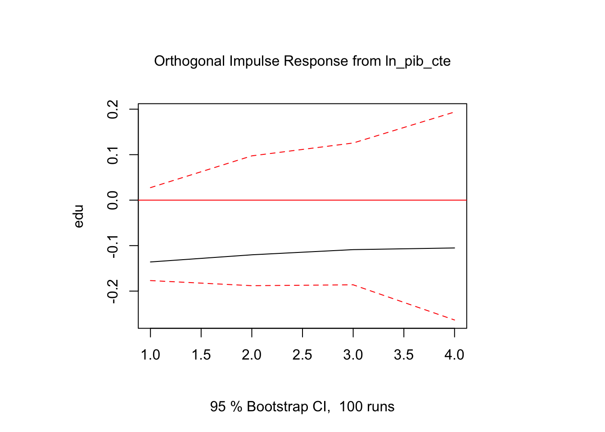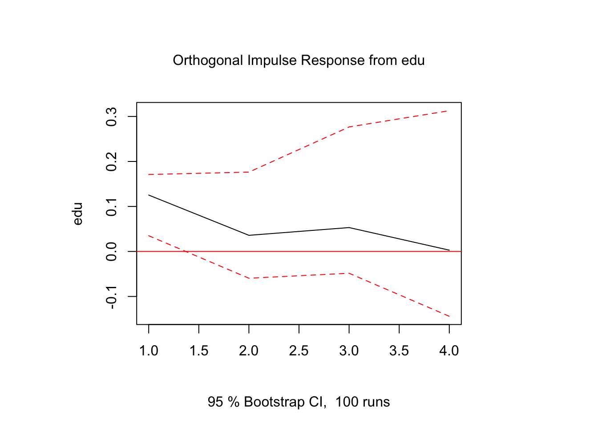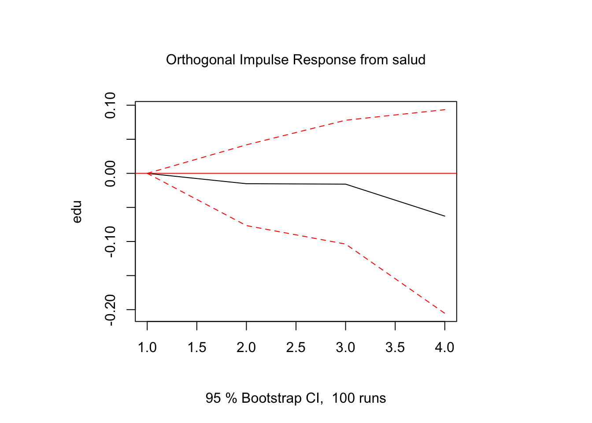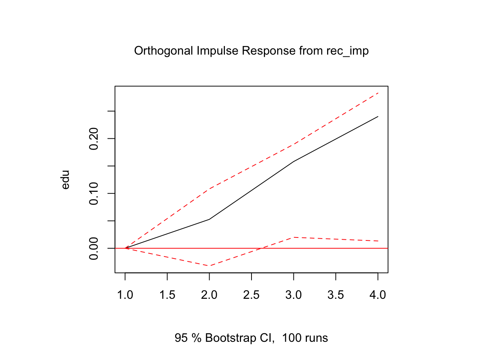
BIC(vec2var(M1,r=rel_coint_aux))## [1] 7.25472512.4 Modelo 4: VECM con K=3 (lags), y r=2 (relaciones de cointegración)
#traemos las series
ln_pib_cte <- series_db$log_GDP_constante
edu <- series_db$Gasto_Educacion_PorcGDP
salud <- series_db$Gasto_Salud_PorcGDP
rec_imp <- series_db$Recaudacion_Impositiva_PorcGDP
# generamos la matriz X
model.data <- cbind(ln_pib_cte,edu,salud,rec_imp)
# estimamos el rango de cointegracion de PI con ca.jo
M1 <- ca.jo(model.data,spec='transitory', type='eigen',K=3)Desde los objetos obtenidos por el ajuste del modelo, se puede obtener \(\beta_c\) de la siguiente manera
k_aux <- 4
rel_coint_aux <- 2
tmp_beta <- M1@V[,1:rel_coint_aux]
st <- cbind(diag(rel_coint_aux),matrix(0,rel_coint_aux,(k_aux-rel_coint_aux)))
beta_c <- tmp_beta%*%solve(st%*%tmp_beta)
beta_c## [,1] [,2]
## ln_pib_cte.l1 1.0000000 0.000000
## edu.l1 0.0000000 1.000000
## salud.l1 0.5133019 3.082597
## rec_imp.l1 -0.8837869 -4.543767De tal manera que los vectores de cointegración tienen una interpretación mucho más sencilla.
Este resultado puede ser validado con lo que se obtiene a partir de la función cajorls
M1.jorls <- cajorls(M1, r = rel_coint_aux)
M1.jorls$beta## ect1 ect2
## ln_pib_cte.l1 1.0000000 0.000000
## edu.l1 0.0000000 1.000000
## salud.l1 0.5133019 3.082597
## rec_imp.l1 -0.8837869 -4.543767Ahora bien, Una vez que se han definido las relaciones de cointegración restringida veamos cómo es el ajuste del modelo a partir de estas definiciones:
summary(M1.jorls$rlm)## Response ln_pib_cte.d :
##
## Call:
## lm(formula = ln_pib_cte.d ~ ect1 + ect2 + constant + ln_pib_cte.dl1 +
## edu.dl1 + salud.dl1 + rec_imp.dl1 + ln_pib_cte.dl2 + edu.dl2 +
## salud.dl2 + rec_imp.dl2 - 1, data = data.mat)
##
## Residuals:
## Min 1Q Median 3Q Max
## -0.056835 -0.008283 0.002389 0.012079 0.027955
##
## Coefficients:
## Estimate Std. Error t value Pr(>|t|)
## ect1 -0.31206 0.15041 -2.075 0.06019 .
## ect2 0.04601 0.02929 1.571 0.14217
## constant 8.66010 4.36656 1.983 0.07070 .
## ln_pib_cte.dl1 -0.39278 0.30495 -1.288 0.22203
## edu.dl1 -0.13193 0.03863 -3.416 0.00512 **
## salud.dl1 -0.05962 0.04932 -1.209 0.24997
## rec_imp.dl1 -0.03547 0.01378 -2.575 0.02432 *
## ln_pib_cte.dl2 -0.33674 0.30767 -1.094 0.29523
## edu.dl2 -0.12503 0.04092 -3.055 0.00999 **
## salud.dl2 -0.05833 0.05030 -1.160 0.26879
## rec_imp.dl2 -0.02284 0.01336 -1.709 0.11308
## ---
## Signif. codes: 0 '***' 0.001 '**' 0.01 '*' 0.05 '.' 0.1 ' ' 1
##
## Residual standard error: 0.02723 on 12 degrees of freedom
## Multiple R-squared: 0.7561, Adjusted R-squared: 0.5325
## F-statistic: 3.382 on 11 and 12 DF, p-value: 0.02341
##
##
## Response edu.d :
##
## Call:
## lm(formula = edu.d ~ ect1 + ect2 + constant + ln_pib_cte.dl1 +
## edu.dl1 + salud.dl1 + rec_imp.dl1 + ln_pib_cte.dl2 + edu.dl2 +
## salud.dl2 + rec_imp.dl2 - 1, data = data.mat)
##
## Residuals:
## Min 1Q Median 3Q Max
## -0.41729 -0.04614 -0.00449 0.08467 0.28656
##
## Coefficients:
## Estimate Std. Error t value Pr(>|t|)
## ect1 4.333e+00 1.024e+00 4.232 0.001164 **
## ect2 -8.673e-01 1.994e-01 -4.350 0.000946 ***
## constant -1.268e+02 2.973e+01 -4.267 0.001094 **
## ln_pib_cte.dl1 -5.169e+00 2.076e+00 -2.490 0.028436 *
## edu.dl1 -4.358e-03 2.630e-01 -0.017 0.987050
## salud.dl1 1.993e-01 3.357e-01 0.594 0.563700
## rec_imp.dl1 -1.545e-01 9.378e-02 -1.648 0.125282
## ln_pib_cte.dl2 -2.310e+00 2.095e+00 -1.103 0.291660
## edu.dl2 2.721e-01 2.786e-01 0.977 0.347998
## salud.dl2 4.210e-01 3.424e-01 1.229 0.242533
## rec_imp.dl2 -5.885e-02 9.096e-02 -0.647 0.529827
## ---
## Signif. codes: 0 '***' 0.001 '**' 0.01 '*' 0.05 '.' 0.1 ' ' 1
##
## Residual standard error: 0.1853 on 12 degrees of freedom
## Multiple R-squared: 0.7669, Adjusted R-squared: 0.5532
## F-statistic: 3.589 on 11 and 12 DF, p-value: 0.01879
##
##
## Response salud.d :
##
## Call:
## lm(formula = salud.d ~ ect1 + ect2 + constant + ln_pib_cte.dl1 +
## edu.dl1 + salud.dl1 + rec_imp.dl1 + ln_pib_cte.dl2 + edu.dl2 +
## salud.dl2 + rec_imp.dl2 - 1, data = data.mat)
##
## Residuals:
## Min 1Q Median 3Q Max
## -0.111421 -0.049610 0.006008 0.051836 0.110819
##
## Coefficients:
## Estimate Std. Error t value Pr(>|t|)
## ect1 0.0007667 0.4983438 0.002 0.99880
## ect2 0.0334274 0.0970448 0.344 0.73647
## constant 1.1415918 14.4673519 0.079 0.93841
## ln_pib_cte.dl1 0.5278656 1.0103731 0.522 0.61087
## edu.dl1 0.3914729 0.1279734 3.059 0.00992 **
## salud.dl1 0.5457862 0.1633934 3.340 0.00588 **
## rec_imp.dl1 0.0130817 0.0456404 0.287 0.77929
## ln_pib_cte.dl2 -0.8191312 1.0193844 -0.804 0.43728
## edu.dl2 -0.0240736 0.1355908 -0.178 0.86204
## salud.dl2 -0.6291192 0.1666646 -3.775 0.00265 **
## rec_imp.dl2 0.1179407 0.0442675 2.664 0.02063 *
## ---
## Signif. codes: 0 '***' 0.001 '**' 0.01 '*' 0.05 '.' 0.1 ' ' 1
##
## Residual standard error: 0.09021 on 12 degrees of freedom
## Multiple R-squared: 0.8012, Adjusted R-squared: 0.619
## F-statistic: 4.397 on 11 and 12 DF, p-value: 0.008467
##
##
## Response rec_imp.d :
##
## Call:
## lm(formula = rec_imp.d ~ ect1 + ect2 + constant + ln_pib_cte.dl1 +
## edu.dl1 + salud.dl1 + rec_imp.dl1 + ln_pib_cte.dl2 + edu.dl2 +
## salud.dl2 + rec_imp.dl2 - 1, data = data.mat)
##
## Residuals:
## Min 1Q Median 3Q Max
## -1.39772 -0.40729 0.06374 0.21882 1.00065
##
## Coefficients:
## Estimate Std. Error t value Pr(>|t|)
## ect1 8.0191 4.0832 1.964 0.0731 .
## ect2 -1.5245 0.7951 -1.917 0.0793 .
## constant -231.7213 118.5377 -1.955 0.0743 .
## ln_pib_cte.dl1 -4.9819 8.2785 -0.602 0.5585
## edu.dl1 0.8626 1.0485 0.823 0.4267
## salud.dl1 -0.2079 1.3388 -0.155 0.8792
## rec_imp.dl1 -0.2062 0.3740 -0.552 0.5914
## ln_pib_cte.dl2 -11.1726 8.3523 -1.338 0.2058
## edu.dl2 -0.8410 1.1110 -0.757 0.4637
## salud.dl2 -2.1297 1.3656 -1.560 0.1448
## rec_imp.dl2 -0.4229 0.3627 -1.166 0.2663
## ---
## Signif. codes: 0 '***' 0.001 '**' 0.01 '*' 0.05 '.' 0.1 ' ' 1
##
## Residual standard error: 0.7391 on 12 degrees of freedom
## Multiple R-squared: 0.6614, Adjusted R-squared: 0.3511
## F-statistic: 2.131 on 11 and 12 DF, p-value: 0.1047mysum <- summary(M1.jorls$rlm)
screenreg(list(mysum[[1]], mysum[[2]],mysum[[3]],mysum[[4]]))##
## ==========================================================
## Model 1 Model 2 Model 3 Model 4
## ----------------------------------------------------------
## ect1 -0.31 4.33 ** 0.00 8.02
## (0.15) (1.02) (0.50) (4.08)
## ect2 0.05 -0.87 *** 0.03 -1.52
## (0.03) (0.20) (0.10) (0.80)
## constant 8.66 -126.84 ** 1.14 -231.72
## (4.37) (29.73) (14.47) (118.54)
## ln_pib_cte.dl1 -0.39 -5.17 * 0.53 -4.98
## (0.30) (2.08) (1.01) (8.28)
## edu.dl1 -0.13 ** -0.00 0.39 ** 0.86
## (0.04) (0.26) (0.13) (1.05)
## salud.dl1 -0.06 0.20 0.55 ** -0.21
## (0.05) (0.34) (0.16) (1.34)
## rec_imp.dl1 -0.04 * -0.15 0.01 -0.21
## (0.01) (0.09) (0.05) (0.37)
## ln_pib_cte.dl2 -0.34 -2.31 -0.82 -11.17
## (0.31) (2.09) (1.02) (8.35)
## edu.dl2 -0.13 ** 0.27 -0.02 -0.84
## (0.04) (0.28) (0.14) (1.11)
## salud.dl2 -0.06 0.42 -0.63 ** -2.13
## (0.05) (0.34) (0.17) (1.37)
## rec_imp.dl2 -0.02 -0.06 0.12 * -0.42
## (0.01) (0.09) (0.04) (0.36)
## ----------------------------------------------------------
## R^2 0.76 0.77 0.80 0.66
## Adj. R^2 0.53 0.55 0.62 0.35
## Num. obs. 23 23 23 23
## RMSE 0.03 0.19 0.09 0.74
## ==========================================================
## *** p < 0.001, ** p < 0.01, * p < 0.05Finalmente obsevemos nuestro modelo ajustado vs los datos recopilados:
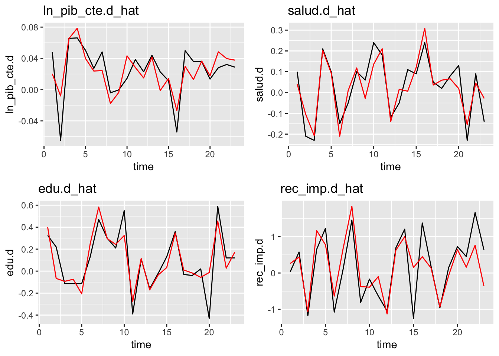
vecm.level <- vec2var(M1,r=rel_coint_aux)
arch.test(vecm.level)##
## ARCH (multivariate)
##
## data: Residuals of VAR object vecm.level
## Chi-squared = 180, df = 500, p-value = 1normality.test(vecm.level)## $JB
##
## JB-Test (multivariate)
##
## data: Residuals of VAR object vecm.level
## Chi-squared = 56.884, df = 8, p-value = 1.897e-09
##
##
## $Skewness
##
## Skewness only (multivariate)
##
## data: Residuals of VAR object vecm.level
## Chi-squared = 22.777, df = 4, p-value = 0.0001403
##
##
## $Kurtosis
##
## Kurtosis only (multivariate)
##
## data: Residuals of VAR object vecm.level
## Chi-squared = 34.107, df = 4, p-value = 7.084e-07serial.test(vecm.level)##
## Portmanteau Test (asymptotic)
##
## data: Residuals of VAR object vecm.level
## Chi-squared = 152.91, df = 212, p-value = 0.9992predict(vecm.level)## $ln_pib_cte
## fcst lower upper CI
## [1,] 30.65166 30.61311 30.69020 0.03854448
## [2,] 30.73744 30.68323 30.79165 0.05420936
## [3,] 30.80853 30.72688 30.89018 0.08164980
## [4,] 30.91224 30.79847 31.02602 0.11377775
## [5,] 31.01563 30.86893 31.16234 0.14670673
## [6,] 31.13453 30.94791 31.32116 0.18662691
## [7,] 31.29073 31.05513 31.52633 0.23560235
## [8,] 31.44581 31.14882 31.74279 0.29698669
## [9,] 31.61533 31.24318 31.98748 0.37214990
## [10,] 31.81768 31.35942 32.27593 0.45825545
##
## $edu
## fcst lower upper CI
## [1,] 5.952567 5.690167 6.214967 0.2624001
## [2,] 6.251284 5.978034 6.524535 0.2732505
## [3,] 6.694731 6.402774 6.986688 0.2919571
## [4,] 7.468030 7.103180 7.832879 0.3648497
## [5,] 8.091748 7.540673 8.642822 0.5510743
## [6,] 8.796180 7.953029 9.639331 0.8431512
## [7,] 9.648249 8.474239 10.822260 1.1740102
## [8,] 10.482563 8.949807 12.015318 1.5327552
## [9,] 11.423143 9.478370 13.367917 1.9447738
## [10,] 12.562490 10.153953 14.971026 2.4085363
##
## $salud
## fcst lower upper CI
## [1,] 2.5319722 2.4042662 2.6596783 0.1277060
## [2,] 2.3873472 2.0966550 2.6780393 0.2906922
## [3,] 1.9894310 1.5787632 2.4000988 0.4106678
## [4,] 1.5495305 1.0037610 2.0952999 0.5457695
## [5,] 1.2621912 0.5034159 2.0209665 0.7587753
## [6,] 0.8028485 -0.1996667 1.8053636 1.0025151
## [7,] 0.2226202 -1.0380177 1.4832582 1.2606379
## [8,] -0.4046979 -1.9772512 1.1678554 1.5725533
## [9,] -1.2003118 -3.1520752 0.7514515 1.9517634
## [10,] -2.0650463 -4.4600761 0.3299835 2.3950298
##
## $rec_imp
## fcst lower upper CI
## [1,] 12.72629 11.67993 13.77264 1.046355
## [2,] 13.69513 12.46288 14.92739 1.232254
## [3,] 14.17579 12.69055 15.66103 1.485240
## [4,] 14.57248 12.68543 16.45954 1.887053
## [5,] 15.75117 13.50975 17.99259 2.241423
## [6,] 15.94917 13.36523 18.53311 2.583943
## [7,] 15.96701 12.97786 18.95617 2.989155
## [8,] 16.81759 13.52664 20.10855 3.290959
## [9,] 17.49025 13.93233 21.04818 3.557921
## [10,] 18.31136 14.38909 22.23363 3.922271irf(vecm.level,boot=FALSE)##
## Impulse response coefficients
## $ln_pib_cte
## ln_pib_cte edu salud rec_imp
## [1,] 0.019665915 -0.067621848 0.01924698 -0.164073922
## [2,] 0.004987483 -0.022810768 0.03629142 -0.014647077
## [3,] -0.001266895 0.010560782 0.01663196 -0.015724262
## [4,] -0.007542540 0.059610301 0.03796728 0.041916649
## [5,] -0.008563506 0.005717826 0.08233467 0.003086728
## [6,] -0.007269197 -0.019204112 0.08997103 -0.206365290
## [7,] -0.006167527 -0.061440771 0.09211014 -0.262402508
## [8,] -0.012247377 -0.096082335 0.09412637 -0.181800170
## [9,] -0.016657566 -0.118631753 0.10592125 -0.133533343
## [10,] -0.021057324 -0.131840575 0.14323682 -0.077800842
## [11,] -0.026586636 -0.153937579 0.18152875 -0.102727279
##
## $edu
## ln_pib_cte edu salud rec_imp
## [1,] 0.000000000 0.11554723 -0.01076395 0.01313726
## [2,] -0.008677824 0.01695083 0.02951149 -0.05964126
## [3,] -0.007232773 0.03545908 0.02561387 -0.27769284
## [4,] -0.002820246 -0.02918105 0.05039765 -0.18070533
## [5,] -0.011979173 -0.07850716 0.04912751 -0.19332255
## [6,] -0.012088293 -0.07968758 0.04985533 -0.25011906
## [7,] -0.017800494 -0.09571792 0.09763363 -0.05157325
## [8,] -0.025974625 -0.12741414 0.12473210 -0.10862066
## [9,] -0.028859403 -0.12370039 0.14567050 -0.26687425
## [10,] -0.034575666 -0.16802731 0.19026744 -0.22158197
## [11,] -0.043061727 -0.22479755 0.21310922 -0.29501369
##
## $salud
## ln_pib_cte edu salud rec_imp
## [1,] 0.000000000 0.000000000 0.06131206 -0.01139146
## [2,] -0.005135646 -0.014829485 0.10270615 -0.05570572
## [3,] -0.010053731 -0.008364414 0.09490898 -0.23765786
## [4,] -0.014718601 -0.033908309 0.10729118 -0.25307568
## [5,] -0.020068377 -0.094987805 0.13726730 -0.19649183
## [6,] -0.023043167 -0.147978574 0.16344636 -0.25131092
## [7,] -0.027484443 -0.186526490 0.19865328 -0.26714126
## [8,] -0.036311149 -0.223500603 0.23605198 -0.24610289
## [9,] -0.046019550 -0.254893585 0.27261871 -0.28099290
## [10,] -0.055187713 -0.299110975 0.32429142 -0.31327173
## [11,] -0.065219083 -0.365141602 0.38280706 -0.36346418
##
## $rec_imp
## ln_pib_cte edu salud rec_imp
## [1,] 0.00000000 0.00000000 0.0000000 0.5077286
## [2,] 0.01586447 -0.02203174 -0.0708190 0.3215490
## [3,] 0.02855658 0.03624250 -0.1093815 0.2124226
## [4,] 0.03678278 0.08311668 -0.1347014 0.5042615
## [5,] 0.04016589 0.17083033 -0.2104784 0.5521372
## [6,] 0.05228791 0.27819120 -0.2728708 0.5118057
## [7,] 0.06536654 0.35497321 -0.3075557 0.6670783
## [8,] 0.07979532 0.42114120 -0.3871802 0.6228804
## [9,] 0.09931970 0.52786266 -0.4910633 0.5549350
## [10,] 0.11802035 0.62487884 -0.5828324 0.7457755
## [11,] 0.13663790 0.73839863 -0.6968783 0.8720783#fevd(vecm.level)plot(irf(vecm.level,n.ahead=3,response='edu',boot=TRUE))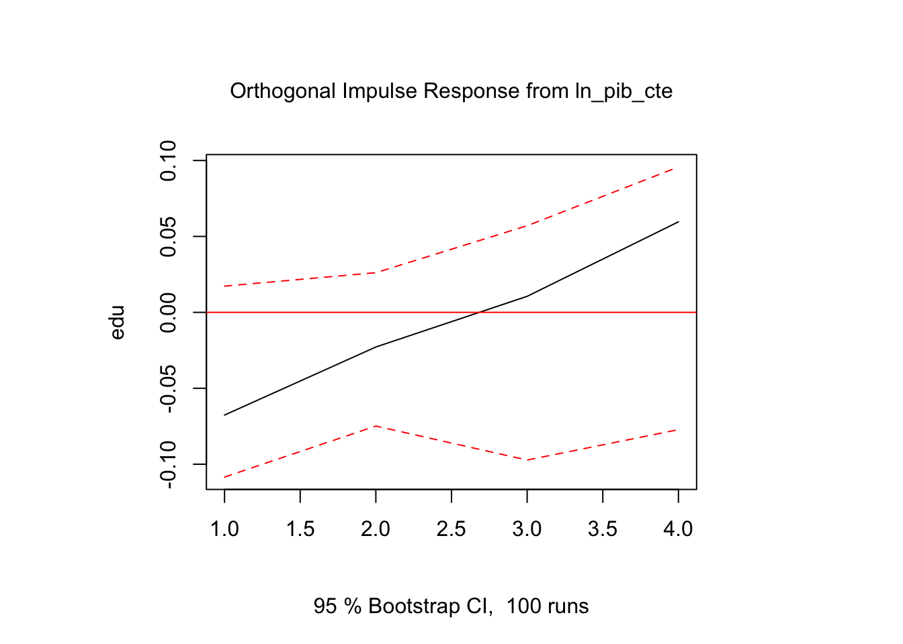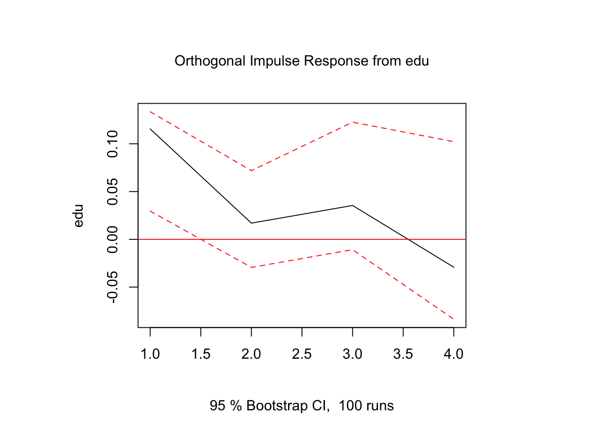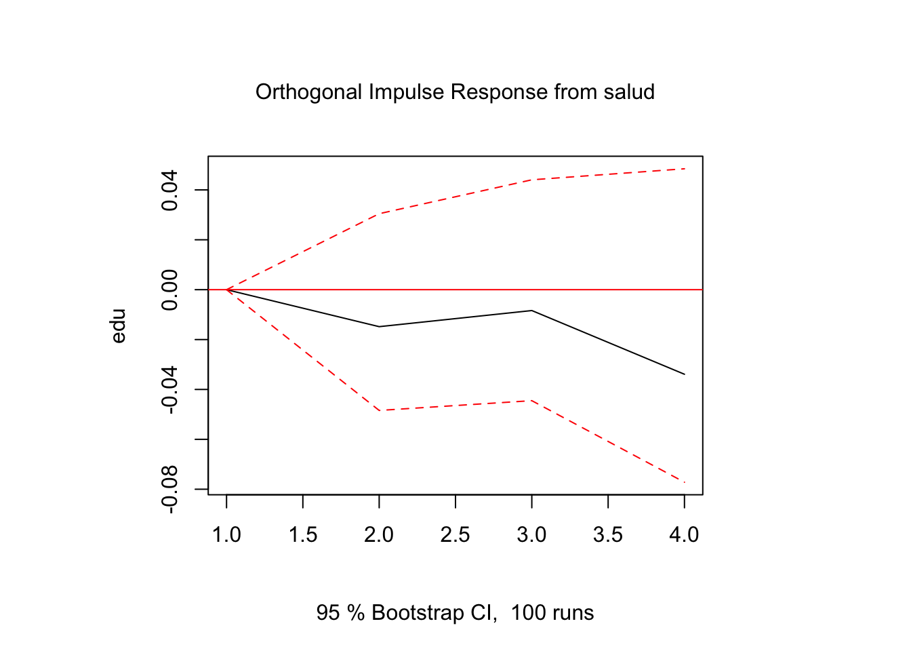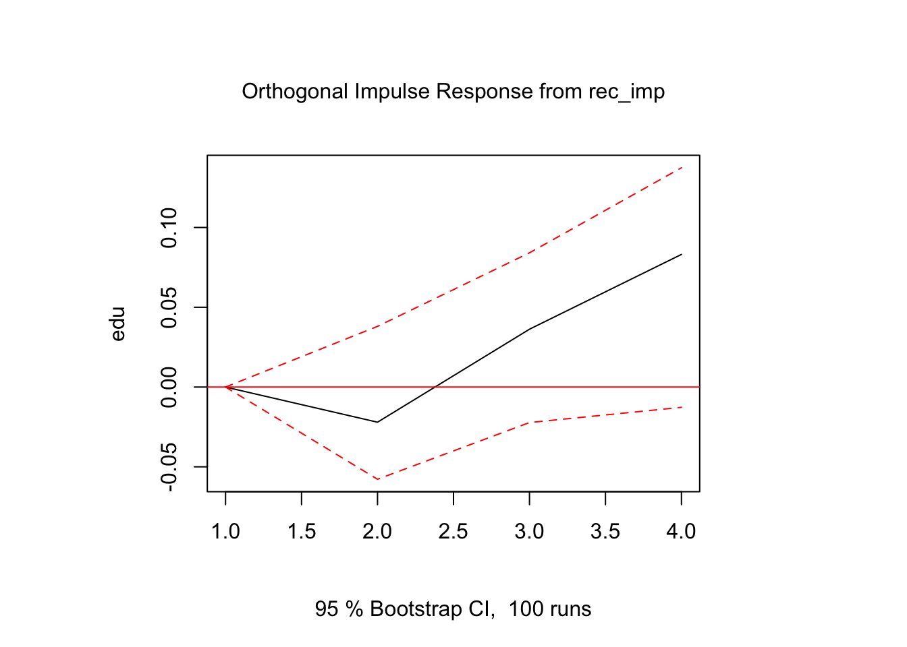
BIC(vec2var(M1,r=rel_coint_aux))## [1] -15.47004